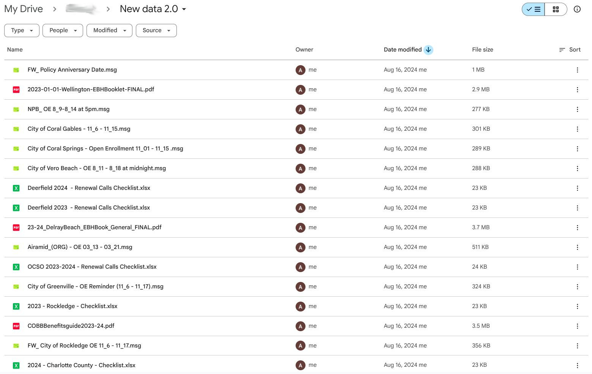
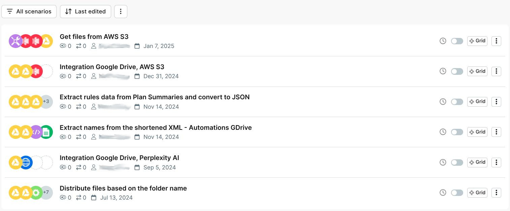
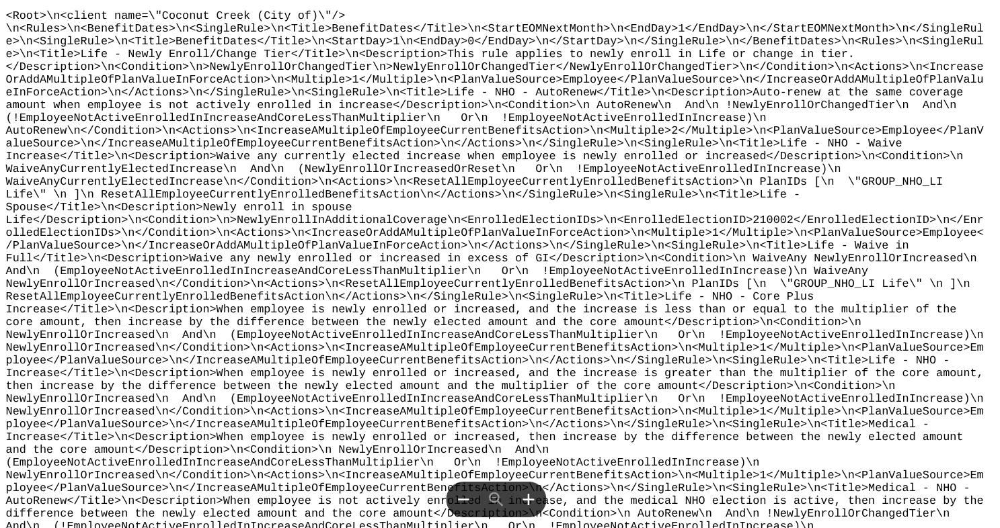

Discovery & Document Domain Mapping
Analyzed historical benefits datasets and Open Enrollment patterns to define what "change"
means in practice and standardize extraction targets for consistent XML generation.
Data Analysis:
Historical benefits datasets, year-over-year update patterns, Open Enrollment cycles
Change Definition:
Eligibility edits, tier changes, premiums, plan naming, rules logic, effective dates
Schema Standardization:
Consistent extraction targets mapped to XML generation requirements
Domain Knowledge:
Codified how humans read benefits updates into machine-learnable patterns
Data Ingestion & Normalization

Example of inconsistent multi-format input: PDFs, PowerPoint, emails, DOCs, spreadsheets—each requiring preprocessing for AI interpretation
The core challenge was handling wildly inconsistent input formats from different cities, employers,
and plan providers—each using unique document structures and layouts.
Input Formats:
PDF plan summaries, PowerPoint OE decks, email exports, DOC files, spreadsheet checklists
Preprocessing Layer:
Normalization pipeline converting diverse formats into text blocks + metadata
Consistency Goal:
Standardized representation for downstream AI regardless of source format
Format Handling:
Different city plans, employer formats, PDF layouts all normalized to common structure
Annotation & Supervised Learning Dataset
Built annotation workflow using Labelbox to create training data that teaches the model how
humans interpret benefits updates—not just text extraction but change understanding.
Annotation Platform:
Labelbox for structured labeling of benefit entities, rule blocks, year-over-year deltas
Training Data Flow:
Raw document → extracted benefit section → structured change intent → XML output
Critical Learning:
Teaching model "how humans read benefits updates" vs. simple text extraction
Dataset Quality:
Clean, labeled examples linking documents to expected XML outputs
AI Extraction & Change Detection Pipeline

Make.com workflow orchestration showing document processing pipeline with error handling, routing, and output generation
Implemented custom LLM pipeline that extracts benefit content, identifies categories, detects
change types, and outputs structured objects—stable across diverse formatting styles.
Pipeline Steps:
Extract & chunk content → Identify benefit category → Detect change intent → Output structured objects
Change Detection:
Classification of new, removed, or updated rules with confidence scoring
Category Identification:
Automatic classification into benefit types (eligibility, premiums, tiers, etc.)
Stability Requirement:
Model performance consistent across different cities, employers, and document formats
Custom LLM Training:
Trained on annotated benefits-change history with prompt/schema enforcement
XML Generation & Validation Layer

Sample structured XML output showing benefit rules with proper tags, attributes, and hierarchical structure for benefits administration system
Transformed AI-detected changes into deterministic XML structures with validation guards ensuring
consistency and usability for downstream benefits administration systems.
Transformation:
AI structured objects → Deterministic XML with consistent formatting
Validation Guards:
Rule checking, schema validation, formatting consistency enforcement
Human Review Workflow:
Edge case approval/adjustment before final export for production use
Output Format:
XML benefit rules and updates ready for benefits administration platform ingestion
Intermediate Objects:
JSON step-level validation for debugging and quality assurance
Workflow Automation & Orchestration
Built end-to-end automation using Make.com for event-based routing and Python for core
processing logic, with AWS S3 for document storage and versioning.
Orchestration Platform:
Make.com for workflow automation and event-based routing
Processing Logic:
Python for parsing, preprocessing, chunking, transformation, pipeline orchestration
Storage & Versioning:
AWS S3 for document storage, historical archive, version control
Automation Flow:
Upload → process → extract → generate XML → store → human review
Supporting Components:
JavaScript for UI hooks, API glue, automation integration